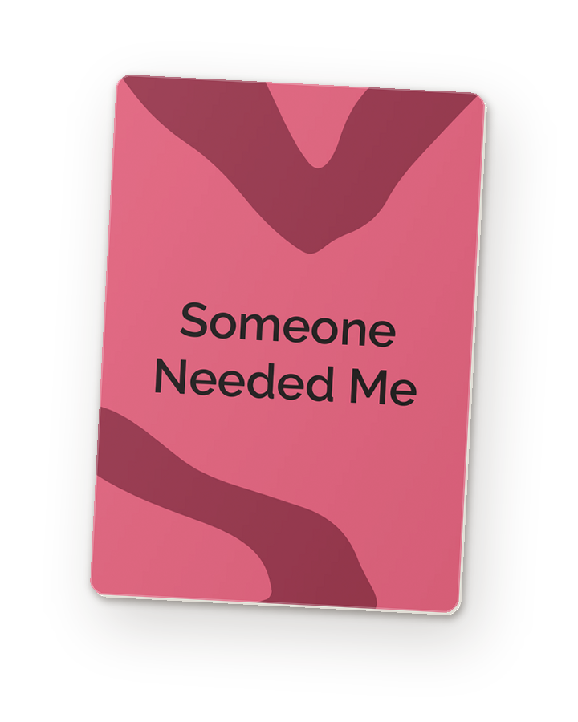

A life change rarely changes one thing.
Midstream helps people see what else it touches.
Facilitated reflection sessions for people in midlife and later life who are going through a change: retiring, children leaving home, caring for a parent, a change in health.
Nine currents run under every concern. Choose one to see the card behind it, and the question it becomes for Robert.
After Robert’s knee surgery, his son hired a lawn service. Robert keeps saying they cut it all wrong, and his family hears a complaint about grass.
For forty years he looked after the house. Fixing things was how he cared for his family, and how he knew he was useful. People often cannot see which part of a change is hurting.
In a Midstream session, a facilitator uses a research-based card deck to ask about each part of life a change can touch. Robert decides which ones matter to him.
The program
Four sessions. A fuller picture.
Offerings
Three ways to take part.
Research foundation
Grounded in research on how people see their own aging.
The cards come from HCI research with older adults. They were developed and tested in people’s homes.

Join a pilot workshop.
The first workshops are free, for small groups of 6 to 10 people going through a change in midlife or later life. To take part, or to hear when they start, write to [CONTACT EMAIL].
The program
Four sessions to explore what is changing.
A small group meets four times with a facilitator. Each person starts from their own situation. The facilitator uses the cards to follow what comes up, keeps track of which parts of life have been discussed, and turns to the others in later sessions. By the fourth session, all nine have been touched.
One possible path · following Robert
| Session 1 | Session 2 | Session 3 | Session 4 |
|---|
Robert talks about the same concern in every session: the lawn service, and how it makes him feel. Each session follows his words into different parts of his life, and some parts come back more than once. Another person’s grid would fill in a different order.
Inside a session
A card, a question, the group, a next step.

Illustrative example, not a participant’s account.
What each person keeps
A transition map they can revise.
In the last session, each person fills in a transition map: the parts of life the change touched, what they noticed, and a next step they chose. They can share it with someone they trust.
Offerings
Three ways to take part.
All three use the same card deck and the same approach. They can run in person or online, for individuals or through organizations.
Pilot workshops are free. Prices will be set after the pilot.
Who it is for
People in the middle of a change.
Midstream is for adults in midlife and later life who are going through a transition and want to understand what it is changing. Groups are small, so everyone has time to speak.
Where technology fits
People run the sessions.
Digital tools, such as a digital version of the cards, may support the sessions later. The sessions themselves are led by a facilitator.
Research
Nine parts of how we see ourselves aging.
How people see their own aging is linked to their physical, emotional and cognitive wellbeing in later life. These views take shape during transitions: leaving work, an emptier home, caring for a parent, a change in health.
Research on self-perceptions of aging describes nine aspects. Midstream sessions cover all nine, so the conversation reaches the parts of life a change touches, even when the person does not name them.
The cards
The cards guide the questions.
Midstream uses a deck of reflection cards developed and tested in research with older adults. Each card belongs to one of the nine aspects.
The facilitator uses a card to ask a question about each person’s own situation, starting from what they have already said.

A card becomes a question
Limits
What still needs testing.
The nine aspects come from aging research. Whether the sessions help people, and whether they work for transitions outside later life, still needs testing. The pilot workshops are the first step.
The aspects organize a conversation. They are not a clinical or diagnostic instrument.
The plan
Developed by Neeta Khanuja, designer and HCI researcher · neetakhanuja.com